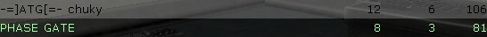

|
|
SCIENCE AND INDUSTRY MANUAL Translated by killa and Corona |


- Inleiding
- Basis Vaardigheden
- Geavanceerd
- Beeldscherm
- Speel_Tips
An advanced guide is also available, which gives more details about the gameplay of Science & Industry:
Science and Industry is een teamplay modificatie voor Half-Life die de speler in de rol van beveiligingsbeambte plaatst bij een van de twee rivaliserende onderzoeks bedrijven plaatst. Elk van deze bedrijven begint met drie onderzoekers, Die onderzoek plegen om betere apparaten voor je bedrijf te maken die vertaald wordt in het spel in het verkrijgen van meer geld. De effectiviteit van jouw onderzoekers hangt af van hoeveel tijd ze krijgen om te werken.... Dus jouw baan is om ze te beschermen tegen vijandelijke aanvallen, en de vijand aan te vallen om hun onderzoek te vertragen. Nog sterker, J kunt hun onderzoekers gevangen nemen, en mee terug nemen naar jouw basis om een groot voordeel te behalen! Het enige wat je moet doen is een van hun onderzoekers te slaan met jouw koffertje... de truck is dan om terug naar jouw personeels zaken afdeling terug te komen in leven met jouw "aanwinst"...
Laat het nou het geval zijn dat je met een heel laag technisch niveau begint... Dus jouw team moet kiezen welke technische snufjes ze willen onderzoeken! Je wapens verbetern maakt je effectiever tijdens gevechten, maar je zal veel moeite hebben om te ontsnappen met een onderzoeker als je geen pantser en implantaten hebt. Sommige technologieen hebben gevolgen voor je onderzoekers ... Die zorgen voor een voordeel in geld bij een gelijke strijd! Dit alles kan van jouw zijn... Je hoeft je alleen maar aan te melden voor Midland Carbide Labs [MCL] of Amalgamated Fluorodynamics [AFD].
Lees de volgende onderdelen voor meer gedetailleerde informatie.
 Om een waardevol medewerker van je bedrijf te zijn moet je, Door je basis heen kunnen bewegen. Elk speelveld heeft een andere lay-out, Maar alleb bestaan ze uit delen waarmee je vertrouwd moet raken. Volg de bordje die door heel je basis geplaatst zijn om deze delen te vinden. Als je niet zeker bent in welke basis je bent, zoek dan naar aanwijzingen in de vorm van kleuren: blauw voor Midland Carbide Labs (MCL), en groen voor Amalagamated Flurodynamics (AFD).
Om een waardevol medewerker van je bedrijf te zijn moet je, Door je basis heen kunnen bewegen. Elk speelveld heeft een andere lay-out, Maar alleb bestaan ze uit delen waarmee je vertrouwd moet raken. Volg de bordje die door heel je basis geplaatst zijn om deze delen te vinden. Als je niet zeker bent in welke basis je bent, zoek dan naar aanwijzingen in de vorm van kleuren: blauw voor Midland Carbide Labs (MCL), en groen voor Amalagamated Flurodynamics (AFD).
- Kloon apparaten - Spelers gedood in dienst van hun bedrijf worden hier geklooned. In deze kamer kun je ook een levens oplader en pantser oplader vinden om jezelf mee op te frissen. Als je te zwaar gewond raakt tijdens je werk, trek dan terug naar deze ruimte om jezelf op teladen en te bewapenen.
- Prototype Opslag - De wapens en andere gereedschappen die door jouw bedrijf gemaakt worden zijn in dit deel van je basis te vinden. Hier vindt je de prototypes van de nieuwste technische snufjes, maar ook minutie en andere al langer beschikbare wapens. In de meeste kantoren, zal deze ruimte ijn de kloon ruimte liggen om medewerkers zich direct te laten voorbereiden op het werk.
- Onderzoeks Laboratoria - Het laboratorium is de ruimte waar je onderzoekers hun werk uitvoeren. Bescherm het ten alle tijden.
- Personeels Zaken - Jouw Secretaris leidt vanuit zijn hier gelegen kantoor hier het bedrijf. Wanneer je iets vindt waarvan je bedrijf voordeel kan hebben (gerecruteerde onderzoekers, gestolen wapens, etc.), breng ze naar hem toe.
- Computer Ruimtes - Sommige speelvelden hebben ruimtes met dure apparaten die je onderzoekers helpen bij hun werk. Verdedig deze ruimte tegen alle mogelijke saboteurs.
 Als beveiligingsbeambte is jouw taak, boven alles, het veilig houden van jouw Laboratoria. Als dat goed gaat, zullen de onderzoekers rondlopen in de laboratoria, en ondertussen veel onderzoek doen waar je niets van begrijpt. Afhankelijk van de lay-out van het speelveld kunnen de laboratoria een grote ruimte of meerdere kleine ruimtes zijns. Je onderzoekers zullen vrij rondlopen door heel het laboratorium. Als je je onderzoekers tevreden houdt door de labs rustig te houden, zullen ze meer gaan onderzoeken (betere wapens, bescherming en technologie) en meer geld voor jouw en je team.
Als beveiligingsbeambte is jouw taak, boven alles, het veilig houden van jouw Laboratoria. Als dat goed gaat, zullen de onderzoekers rondlopen in de laboratoria, en ondertussen veel onderzoek doen waar je niets van begrijpt. Afhankelijk van de lay-out van het speelveld kunnen de laboratoria een grote ruimte of meerdere kleine ruimtes zijns. Je onderzoekers zullen vrij rondlopen door heel het laboratorium. Als je je onderzoekers tevreden houdt door de labs rustig te houden, zullen ze meer gaan onderzoeken (betere wapens, bescherming en technologie) en meer geld voor jouw en je team.
De onderzoekers van jouw bedrijf zullen het heel moeilijk vinden als er veel lawaai is in hun werk omgeving, dus een deel van jouw taak is het stil laag houden van het geluids niveau in de laboratoria. Je houdt je laboratoria stil door er voor te zorgen dat er geen wapens afgevuurd worden in de omgeving. Niets is storender dan een raket die af gaat bij je experimenten, en dit geldt zowel voor jouw wapens als voor de wapens van de vijandelijke beveiligingsmeambten.
Als je toch teveel geluid maakt in de buurt van de laboratoria, zak je merken dat je onderzoekers minder hard gaan werken. Je kan rechts onderin de HUD zien hoe hard ze werken aan het atoom tekentje. Als alles goed gaat, zal het atoom tekentje helemaal wit zijn, maar als je Onderzoekers mider hard gaan werken, zal het atoom tekentje maar voor een gedeelte wit zijn en de rest grijs. Aan de hoeveel heid wit in het atoom tekentje kan je dus zien hoe hard ze werken. Als de onderzoekers minder hard gaan werken, zal jouw team minder inkomen krijgen en zal het langer duren voordat de onderzoek die gaande is klaar zal zijn.
Je onderzoekers kunnen worden gedood door tegenstanders (let op, Ze kunnen niet gedood worden door je eigen team - Ze beschieten zal ze alleen storen en ervoor zorgen dat ze minder hard gaan werken). Je zou dit kunnen zien als een goede vorm om je tegenstanders bedrijf te storen, want als ze geen onderzoekers hebben kunnen ze niet verder onderzoeken en moeten ze geld uitgeven aan het huren van nieuwe onderzoekers. Maar, jouw eigen onderzoekers zijn er niet zo blij mee om te horen dat hun collega's vermoord worden, zelfs bij vijandschap, en dus zullen ze minder hard gaan werken elke keer dat je een vijandelijke onderzoeker dood. Erger nog, als je een bepaald aantal vijandelijke onderzoekers dood zullen jouw onderzoekers een chip in je hoofd plaatsen, die jouw een schok geeft elke keer dat je een onderzoeker verwond. Je kunt zelfs score verliezen voor het doden van vijandelijke onderzoekers. Dus, in het algemeeen is het doden van vijandelijke onderzoekers een slecht idee. Maar, als je geen onderzoekers meer hebt is er natuurlijk geen eigen team om je repressailes te geven.
Aan het begin van elke map/ronde zal elke team 3 onderzoekers hebben, wat geld, en een paar simpele wapens (Koffer en een colt defender). Na een paar seconden kunnen jouw onderzoekers met het onderzoeken beginnen, en een simpele stem menu zal opkomen aan de linkerkant van de HUD met de eerste keuzes. Elke lid van het team heeft een paar seconden om hun stem te versturen, door het tellen van de stemmen wordt er bepaald wat er onderzocht zal worden.
 De technologie tabel is best wel complex. Voor elk nieuwe technologie dat jij zou willen onderzoeken, zal er andere onderzoeken van tevoren nodig zijn. Als de onderzoek die nu bezig is bijna is afgelopen, zal er een menu komen met zes onderzoeks keuzes waarvan je kan kiezen, zoals wapens betere armor, of zelfs implants die je gehele team beter maakt in de gevechten. Als er meer dan zes keuzen zijn, zullen de de belangrijkste keuzes worden laten gezien. Bedenk ook dat je team begint zonder armmor, en dat je niks uit de armor rechargers komen totdat je dat hebt onderzocht.
De technologie tabel is best wel complex. Voor elk nieuwe technologie dat jij zou willen onderzoeken, zal er andere onderzoeken van tevoren nodig zijn. Als de onderzoek die nu bezig is bijna is afgelopen, zal er een menu komen met zes onderzoeks keuzes waarvan je kan kiezen, zoals wapens betere armor, of zelfs implants die je gehele team beter maakt in de gevechten. Als er meer dan zes keuzen zijn, zullen de de belangrijkste keuzes worden laten gezien. Bedenk ook dat je team begint zonder armmor, en dat je niks uit de armor rechargers komen totdat je dat hebt onderzocht.
De snelheid waarmee een onderzoek klaar is verschild aan hoeveel
onderzoekers er werken, en hoe goed ze dat doen.
Als je dus meer onderzoekers heb, kan het dus ook
gebeueren dat je voor gaat lopen op de tegenstander.
Als je dood gaat in het spel zal jouw bedrijf je weer opwekken met behulp van cloning technologie. Het kost je bedrijf wel geld (Zie tabel beneden) Als iedereen in het bedrijf maar blijft dodd gaan, zullen ze er niet veel geld aan over houden. Ook neemt de cloning process veel tijd in beslag, het duurt een tijdje voordat je weer kan respawned, dit kan worden verkort door speciale onderzoeken die jouw bedrijf kan doen ("cloning upgrade" is dar een voorbeeld van). Nadat je dood ben gegaan zul je voor een korte tijd niet dood kunnen gaan, dit kan je gebruiken voor het weghalen voor mensen die buiten je op staan te wachten.
Een goede manier om je bedrijf beter te laten lopen, is het "aan nemen" van onderzoekers van de andere team. je kan dit doen door naar de labs van de andere team te gaan, pak dan je handkoffer (via het wapen systeem), en sla dan de onderzoekers van de tegenstander bewusteloos, en je neemt hem automatisch mee op je rug. Alleen is het jammer dat de onderozker van de tegen partij jouw zal herkennen aan de kleur van pak. Hij zal (hoe kan het ook anders) in paniek raken, en hij probeert van je weg te rennen. Maarja, het blijfven maar onderzoekers, je kan hem zo inhalen en bewusteloos slaan (Als er maar geen vijanden zijn van het andere team). Als je hem dan eindelijk op je schouder hebt kan je hem terug brengen naar je baast.
 Als je eindelijk de onderzoeker terug hebt naar je eigen basis, zal je naar je baas moeten zoeken om hem terug te brengen. De baas (zie links op de foto) zal de onderzoeker "overhalen" dat hij veel beter af is bij jouw bedrijf dan bij de ander, en zo heb je jouw eigen team een onderzoeker meer bezorgt. Als je moeite heb met het vinden van de baas, kan je makkelijk de "Human Resources" bordjes volgen en (hopelijk als je de weg niet kwijt raakt) kom je bij je baas.
Als je eindelijk de onderzoeker terug hebt naar je eigen basis, zal je naar je baas moeten zoeken om hem terug te brengen. De baas (zie links op de foto) zal de onderzoeker "overhalen" dat hij veel beter af is bij jouw bedrijf dan bij de ander, en zo heb je jouw eigen team een onderzoeker meer bezorgt. Als je moeite heb met het vinden van de baas, kan je makkelijk de "Human Resources" bordjes volgen en (hopelijk als je de weg niet kwijt raakt) kom je bij je baas.
Als je dood gaat terwijl je een onderzoeker draagt, zal hij op die plek voor een tijd blijven liggen en dan weer naar zijn eigen lab terug gaan al hij weer bij zinnen is. Jij en je teammates kunnnen hem voordat hij terug gaat alsnog oppakken en terug brengen. Alleen de team die bezig was met het stelen van de onderzoeker kan hem weer oppakken, de andere team kan dus die onderzoeker beschermen totdat hij weer terug gaat naar zijn lab.
Als je een vijand vermoord terwijl hij een wapen heeft, zal hij deze laten liggen en kan jij hem oppakken voor wat extra ammo. Maar het is dan helemaal handig als jij dat wapen nog niet heb onderzocht, want dan kan jij dat wapen terug brengen naar baas voor een bones in je score. Als je wilt dat jouw baas het nieuwe wapen in beslag neemt, moet je hem in je handen houden en dan aan de baas geven. Elke keer als je weer een wapen inlevert die je nog niet heb onderzocht, zal de onderzoeks tijd voor dat wapen telkens verkortene. Dus je moet nog wel voten om dat wapen te onderzoeken zodat je onderzoekers het wapen in de omloop kunnen brengen, zodat jij het kan gebruiken.
Als jouw bedrijf een belangrijk wapen heeft dat de vijand nog niet heeft zal je moeten oppassen. Als jij dat wapen vasthoud in een gevecht en je gaat dood, zal de vijand het bijna zeker terug brengen naar zijn eigen baas. Dus als je bijna dood gaat, moet je oppassen dat je geen speciale wapens vasthoud (zoals de handkoffer of de colt).
 Vaak hebben grote high tech bedrijfen belangrijke en dure apparatuur staan, die hun helpt bij het onderzoeken. Maar ook al wordt de onderzoekstijd verkort door deze apparatuur en besparen ze veel geld, al deze apparatuur is wel heel erg makkelijk kapot te maken door de vandalen. Als jij het bedrijf van de tegenstander aan het indringen ben, moet je er op letten dat je geen belangrijke computers, cloning apparatuur, of iets anders mist, want als jij deze kapot maakt zal het werk van de tegenstander erg in de soep lopen.t.
Vaak hebben grote high tech bedrijfen belangrijke en dure apparatuur staan, die hun helpt bij het onderzoeken. Maar ook al wordt de onderzoekstijd verkort door deze apparatuur en besparen ze veel geld, al deze apparatuur is wel heel erg makkelijk kapot te maken door de vandalen. Als jij het bedrijf van de tegenstander aan het indringen ben, moet je er op letten dat je geen belangrijke computers, cloning apparatuur, of iets anders mist, want als jij deze kapot maakt zal het werk van de tegenstander erg in de soep lopen.t.
Als je wil weten wat er allemaal kapot kan, moet je als je een team moet kiezen, even kijken naar de map textfile die rechts in je beeldscherm verschijnt (deze staat ook in SI/maps/mapnaam.txt). Bekijk even wat er allemaal stuk gemaakt kan worden en waar het staat, zo kan je optiamale aanvallen doen.
De beste manier om al dat apparatuur kapot te maken is met je handkoffer of met explosiven. Als er apparatuur kapot is gemaakt, zal het bedrijf van wie het was, tijd en geld in het repareren stoppen. En na een tijd zal het kappote appatuur wil als nieuw komen te staan (klaar om nog een keer kapot gemaakt worden).
Sommige maps hebben hulpmiddelen rond liggen, die jouw bedrijf een extra duwtje in de rug geeft. Informatie over de locatie hulpmiddelen in een map, kan worden gevonden in de map text file die verschijnt als je teams moet kiezen.
Al die hulpmiddelen zijn allemaal verschillend, en zullen worden beschreven in de reedme. Deze hulpmiddelen kunnen worden opgepakt op vaste plaatsen worden opgepakt (in de vijandige basis of ergens anders verstopt), en dan kan je het aan je baas geven. Het is net als een onderzoeker stelen en terug brengen. Maar de hulpmiddel kunnen verschillen in elke manier, bijvoorbeeld: als jij dood gaat terwijl je een onderzoeker draagt, kan je teammate hem nog oppakken voordat hij/zij weer wakker wordt. Maar als jij een hulpmiddel draagt en je gaat dood ben je hem gewoon kwijt. Ook hebben sommige hulpmiddelen tijd limit waarin jij het terug kan brengen, en zo zijn er nog wat eigenschappen. Alle info kan gevonden worden in de map text file, hierin kun je lezen waar een hulpmiddel ligt hoe het eruit ziet en wat het je oplevert.
Science en Industry gebruikt twee verschillende scores om te laten zien hoe het gaat. Team score wordt gemeten met het aantal geld dat het bedrijf heeft, en speler score wordt bijgehouden met het aantal frags dat een speler gemaakt heeft. Het aantal frags dat je krijgt verschild per situatie, om het offence en defense uit te balenceren. De team score staat altijd up to date, rechts boven in het scherm.
| Bedrijfs kapitaal | |
| Het normale inkomen van per seconde: | $60 |
| Extra geld per onderzoeker per seconde. (als ze op hun best werken): | $15 |
| Kloning dienst | -$800 |
| Een nieuwe onderzoeker aan nemen | -$1,000 |
| Persoonlijke bonus punten | |
| Tegestander vermoorden | 1 |
| Tegenstander vermoorden die de arbeider van de maand is | 2 |
| Tegenstander vermoorden dicht bij jouw lab (maar wel de onderzoekers storen) | 2 |
| Tegenstander vermoorden dicht bij jouw lab (zonder de onderzoekers te storen) | 3 |
| Het beschermen van iemand die een onderzoeker op zijn rug heeft | 2 |
| Tegenstander vermoorden die één van jouw onderzoekers op zijn rug heeft | 2 |
| Geslaagd een onderzoeker aan nemen | 5 |
| Een wapen inleveren die jouw bedrijf nog niet heeft | 2 |
| Het kapot maken van spullen (Computers ect.) | varies |
| Het terug brengen van een hulpmiddel | varies |
Alles in de HUD wordt beneden uit gelegt:
Persoonlijk
 Links onder in je HUD vindt je informatie over je persoonlijke status, zoals gezondheid, bescherming level, en het aantal munitie. Je moet ze voor duidelijke reden altijd in de gaten houden. Gezondheid en bescherming kunnen weer opgeladen worden door opladers in jouw basis the gebruiken, of door dingen die uit zijn gevonden. Autoopladende Biotechnology, of autoopladende Armor. Je ammo kan worden her vult door ammo dozen opte pakken in je basis, of door Persoonlijke ammo autooplaaders. Denk er wel aan dat je zonder armor begint, en dat jouw team deze moet onderzoeken voordat het gebruikt kan worden. Totdan zullen de oplaaders in je basis op non-actief staan.
Links onder in je HUD vindt je informatie over je persoonlijke status, zoals gezondheid, bescherming level, en het aantal munitie. Je moet ze voor duidelijke reden altijd in de gaten houden. Gezondheid en bescherming kunnen weer opgeladen worden door opladers in jouw basis the gebruiken, of door dingen die uit zijn gevonden. Autoopladende Biotechnology, of autoopladende Armor. Je ammo kan worden her vult door ammo dozen opte pakken in je basis, of door Persoonlijke ammo autooplaaders. Denk er wel aan dat je zonder armor begint, en dat jouw team deze moet onderzoeken voordat het gebruikt kan worden. Totdan zullen de oplaaders in je basis op non-actief staan.
Research
 Rechts onder in de HUD vindt je informatie over je bedrijf. Het atoom tekentje links boven laat zien hoe goed je onderzoekers aan het werken zijn. Als deze helemaal grijs is, zijn ze helemaal niet aan het werken. Als het atoom tekentje helemaal wit is, zijn jouw onderzoekers op hun best aan het werken. Als hij helemaal groen is dan onderzoeken jouw onderzoekers beter dan normaal (door een vergroting, zoals de mindray). In het voorbeeld werken ze 100%. Je kan zien hoe hard elke onderzoeker individueel werkt door naar ze te kijken.
Rechts onder in de HUD vindt je informatie over je bedrijf. Het atoom tekentje links boven laat zien hoe goed je onderzoekers aan het werken zijn. Als deze helemaal grijs is, zijn ze helemaal niet aan het werken. Als het atoom tekentje helemaal wit is, zijn jouw onderzoekers op hun best aan het werken. Als hij helemaal groen is dan onderzoeken jouw onderzoekers beter dan normaal (door een vergroting, zoals de mindray). In het voorbeeld werken ze 100%. Je kan zien hoe hard elke onderzoeker individueel werkt door naar ze te kijken.
Het nummer naast de atoom tekentje laat zien hoeveel onderzoekers jouw bedrijf heeft op het moment. Als je merkt dat je opeens minder onderzoekers heb, kan er twee dingen gebeurt zijn. Of één van je onderzoekers is vermoord, dan zou je meteen naar je labs moeten rennen om dit te stoppen, of één van de onderzoekers is gestolen door een speler van de andere team, en moet je hem stoppen voordat hij een kans krijgt om hem veilig af te leveren bij zijn eigen baas.
Onder het atoom tekentje zie je wat jouw bedrijf op dit moment aan het onderzoeken is, en hoe lang dat nog duurt. Als de onderzoek bezig is zal het balkje zich langzaam vullen van links naar rechts, zo kan je schatten how lang het nog duurt. Als deze helemaal wit is, zal het in gebruik worden genomen door je bedrijf en gaan je onderzoekers verder met de volgende onderzoek.
Geld status
 Rechts boven (of links boven, hangt er vanaf hoe je de cvar hud_showTeamCash heb gezet) zal zien hoeveel geld bijde bedrijven hebben. Dit is erg handig om te zien wie er voorop loopt zonder naar de score board te hoeven kijken. Onder het geld staat een klokje dat laat zien hoelang deze ronde nog duurt.
Rechts boven (of links boven, hangt er vanaf hoe je de cvar hud_showTeamCash heb gezet) zal zien hoeveel geld bijde bedrijven hebben. Dit is erg handig om te zien wie er voorop loopt zonder naar de score board te hoeven kijken. Onder het geld staat een klokje dat laat zien hoelang deze ronde nog duurt.
Draag status
 Als je een onderzoeker van de andere team gestolen hebt, zal je op je hud zien te zien krijgen door een plaatje en een naam van de onderzoeker die je gestolen hebt.
Als je een onderzoeker van de andere team gestolen hebt, zal je op je hud zien te zien krijgen door een plaatje en een naam van de onderzoeker die je gestolen hebt.
 Als je een hulpmiddel draagt zal je dit hetzelfde merken als dat je een onderzoeker hebt gestolen, ondanks dat ze anders zijn. Een plaatje dat de gestole hulpmiddel presenteerd zal boven de onderzoeks status verschijnen. De naam van de hulpmiddel die je draagt staat boven het plaatje.
Als je een hulpmiddel draagt zal je dit hetzelfde merken als dat je een onderzoeker hebt gestolen, ondanks dat ze anders zijn. Een plaatje dat de gestole hulpmiddel presenteerd zal boven de onderzoeks status verschijnen. De naam van de hulpmiddel die je draagt staat boven het plaatje.
Een oogje houden op de Science & Industry scorebord is erg noodsakelijk voor een goede comminucatie tussen je teammaten.
Op de scorebord zul je gauw zien dat er teams worden geschijden. De eerste twee zijn de twee bedrijven: Midland Carbide Labs (MCL) en Amalagamated Flurodynamics (AFD). Naast de naam van de bedrijf staat hoeveel geld het bedrijf heeft. Die moet je goed in de gaten houden, want de bedrijf die de meeste geld heeft op de einde van de ronde zal gewonnen hebben. De derde groep: Unemployed (nog niet aan genomen) bestaat uit spelers die nog een bedrijf moeten kiezen om in te spelen, en spelers die het gevecht willen bekijken dan om echt mee te doen.
Werknemer van de maand
Als iemand een E naast zijn naam heeft, is hij de weknemer van de maand van de team waar hij in zit. Werknemers van de maans hebben zich zelf bewezen om ervaren en goed te zijn. Luister naar zijn woorden, het zijn mensen die goede offensive en defensive taktieken kunnen bedenken. Een goede werknemer van de maand helpt bij het bepalen van de onderzoeks richting en hij bedenkt plannen om de onderzoekers te beschermen (of om ze terug te krijgen). Een ongeoorganiseerde team is makkelijk neer te slaan door de tegenstander.
Llamas
Als een speler een "L" naast zijn naam heeft, moet je oppassen. Omdat mensen dit berijken, veel iritante dingen heeft gedaan, en dat is niet handig voor jouw team of de tegenparij. Niemand vindt een "llama" leuk. Maar, als een die spelerr zich van die L afwerkt, moet je wel aardig tegen ze blijven; ze hebben dan gezien wat ze fout hebben gedaan.

Teammaten van jouw team die een onderzoeker van de tegenpartij op hun schouder dragen zullen opgelicht worden op de scorebord door het wi rond hun naam. Zoek ze op en help ze om die onderzoeker veilig terug te krijgen naar je baas. Je moet begrijpen dat ze te druk bezig zijn om goed te communiceren, ze zullen te druk bezig zijn met het afweren van vijanden die hem proberen te stoppen.
Hulp middeldrager
Als een teammaat een hulpmiddel bij zich draagt zal hij op de scorebord opgelicht worden in het bruin. De item die hij draagt hangt van de map af, en de doel en de methoode varieert ook. Wees zeker om even de map text bestand te lezen over de hulpmiddelen. Maar net zoals onderzoekers aannemers, is het vanzelf sprekend om deze persoon te vinden en hem even een handje te helpen.
Nu dat je SI een beetje kent zullen we je wat tips geven:
- De meeste nieuwe spelers in S&I zullen er niet aan denken om de onderzoekers te gaan verdedigen, maar dit is wel één van de belangrijkste dingen van SI. Onthoud dat het veel makkelijker is om jouw onderzoekers te beschermen dan het is om ze weer terug te stelen van de andere team. Verdedigers krijgen ook een voordeel van een verdedigings punt, en ze zijn dichter bij de opladers en ammonutie. Als een georganiseerde team werken waar iedereen een rol heeft kan gaten dicht houden in je verdediging, ook heb je een betere kans om het slagen van een groot schalige aanval op de tegen partij.
- Denk goed na voordat je gaat stemmen... nieuwe wapens zijn harstikke lollig, maar meer bescherming en betere benen zijn beter voor jouw en heel je team. Bijna elke hoge technologien in het spel hebbenManufacturing Process Upgrade nodig, dat maakt het erg handig om te onderzoeken. Veel techonologien hebben de nodige effecten dat ze allemaal handig maken in hun eigen marnier, zoals de Upgraded Coffee Strength dat je onderzoekers wat harder laat werken, of datRegeneratvie Biotechnology leidt to alle implants en biotechnologien. Luister naar ervaren spelers, zij weten beter wat een voordeel zal zijn voor je team. Bekijk de Technology Tree als je wil weten wat er allemaal te onderzoeken is.
- Wees geen lamer. Wees aardig, help nieuwe spelers, speel eerlijk, balanceer de teams als je kan, en het belangrijkste: heb plezier in het spelen van SI!